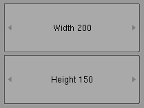

| Home | Trees | Index | Help |
|---|
| Module gui :: Class IntNumber |
|
object--+ |Widget--+ |Number--+ | IntNumber
Integer number input (Number subclass).
# file: ex_IntNumber.py
import Blender
import gui
# callbacks
def width_callback(val):
cont.set_geometry(None, None, val, None)
Blender.Draw.Redraw()
def height_callback(val):
cont.set_geometry(None, None, None, val)
Blender.Draw.Redraw()
# make interface
interface = gui.Interface()
# range of width & height is 50..300, initial value 100
width = gui.IntNumber(interface, 'Width', 100, 50, 300, callback=width_callback)
height = gui.IntNumber(interface, 'Height', 100, 50, 300, callback=height_callback)
# grid: 1 column, 2 rows
cont = gui.Grid(interface, 10,10, width.value, height.value, 1,2)
cont.add( width, 0, 0 )
cont.add( height, 0, 1 )
interface.register_container(cont)
interface.run()
# eof

| Method Summary | |
|---|---|
| |
Draw widget. | |
| Inherited from Number | |
| |
| Inherited from Widget | |
Set visibility of the widget. | |
Return visibility of the widget. | |
| Inherited from object | |
x.__delattr__('name') <==> del x.name | |
x.__getattribute__('name') <==> x.name | |
x.__hash__() <==> hash(x) | |
T.__new__(S, ...) -> a new object with type S, a subtype of T | |
helper for pickle | |
helper for pickle | |
x.__repr__() <==> repr(x) | |
x.__setattr__('name', value) <==> x.name = value | |
x.__str__() <==> str(x) | |
| Property Summary | |
|---|---|
| Inherited from Number | |
max | |
min | |
name | |
tooltip | |
value | |
| Method Details |
|---|
__init__(self,
interface,
name,
value,
min,
max,
tooltip='',
callback=None)
|
draw(self, x, y, width, height)Draw widget. This method should be called only by container.
|
| Home | Trees | Index | Help |
|---|
| Generated by Epydoc 2.1 on Mon Jul 18 19:50:45 2005 | http://epydoc.sf.net |